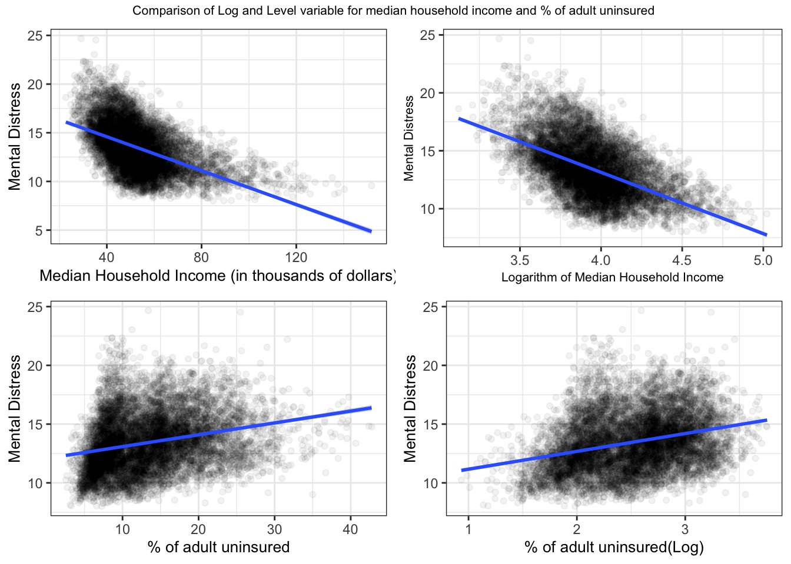

Chapter 4 Results
As previously you have seen the maps of United States according to the Frequent Mental Distress Percentage, in the years 2019,2020 and 2021. You have also seen the factors that contribute to a person’s frequent mental distress. You have also seen how the percentage of frequent mental distress is distributed in the years from 2019 to 2021. Moreover, we have taken a glance at the change of the percentage of frequent mental distress from 2019 to 2021. You can clearly see in the graph ‘Plot of two year change in frequent mental distress %’ that the percentage of frequent mental distress has decreased for a very small amount of counties (Oglala Lakota, Mora County, Menominee County, Corson County, Falls Church County, Arlington County, Clay County, Ziebach County) . You will now build and run the regression models to make better assumptions of the factors which is affecting the percentage of frequent mental distress.
| Statistic | N | Min | Mean | Median | Max |
| pct_mental_distress | 9,423 | 8.003 | 13.440 | 13.237 | 24.669 |
| pct_adult_obese | 9,423 | 11.000 | 32.798 | 33.000 | 58.900 |
| pct_insufficient_sleep | 9,423 | 23.028 | 34.299 | 34.281 | 49.056 |
| pct_uninsured_adults | 9,423 | 2.543 | 13.502 | 12.468 | 42.751 |
| social_assoct | 9,423 | 0.000 | 12.342 | 11.492 | 70.621 |
| pct_housing_prob | 9,423 | 0.000 | 13.898 | 13.363 | 71.217 |
| median_income_inthousand | 9,423 | 22.679 | 53.199 | 50.949 | 151.806 |
As you can see that the table summarizes all the statistics that have been used to build and run the regression models. The summary includes the number of observations, minimum, average, median and the maximum of our health outcome pct_mental_distress and also for all the other 6 health measures.

Sometimes we need to transform some of the variables to get better results from our regressions. That’s why we checked to see if any of the variables used in our regression model need any transformation. Usually using the logarithm of the variables which doesn’t fit the model well can improve the fit of the model by transforming the distribution to a more normally-shaped bell curve. As you can see in the graph that we have found that only Median Household Income in thousands and Percentage of Adult who are uninsured required the log transformation. You can see in the scatter plot that before the transformation that the points are more skewed and not fitting the line of best fit properly. But after the log transformation in both of the variables you can see that we obtain a regression line more adjusted and fitted throughout the data points. Thus this transformation will result in a better prediction model.
The five different models using the same set of 6 explanatory variables are shown below:–
Model 1 - Pooled OLS:
\[ \begin{align} y_{it} = \beta_0 +\beta_1 x_{1it} + \beta_2 x_{2it} + \beta_3 x_{3it} + \beta_4 x_{4it} + \beta_5 x_{5it} + \beta_6 x_{6it} + u_{it} \end{align} \]
Model 2 - County fixed effect:
\[ \begin{align} y_{it} = \beta_0 +\beta_1 x_{1it} + \beta_2 x_{2it} + \beta_3 x_{3it} + \beta_4 x_{4it} + \beta_5 x_{5it} + \beta_6 x_{6it} + \sum_{g=2}^{3141}\alpha_gdS_g + u_{it} \end{align} \]
Model 3 - Year fixed effect:
\[ \begin{align} y_{it} = \beta_0 +\beta_1 x_{1it} + \beta_2 x_{2it} + \beta_3 x_{3it} + \beta_4 x_{4it} + \beta_5 x_{5it} + \beta_6 x_{6it} + \sum_{y=2019}^{2021}\delta_ydY_y + u_{it} \end{align} \]
Model 4 - County Fixed Effect and Year Fixed Effect:
\[ \begin{align} y_{it} = \beta_0 +\beta_1 x_{1it} + \beta_2 x_{2it} + \beta_3 x_{3it} + \beta_4 x_{4it} + \beta_5 x_{5it} + \beta_6 x_{6it} + \sum_{g=2}^{3141}\alpha_gdS_g + \sum_{y=2019}^{2021}\delta_ydY_y + u_{it} \end{align} \]
Model 5 - State Year Fixed Effect:
\[ \begin{align} y_{it} = \beta_0 +\beta_1 x_{1it} + \beta_2 x_{2it} + \beta_3 x_{3it} + \beta_4 x_{4it} + \beta_5 x_{5it} + \beta_6 x_{6it} + \sum_{gy=2}^{153}\sigma_{gy}dSY_{gy} + u_{it} \end{align} \]
| Dependent variable: | |||||
| pct_mental_distress | |||||
| OLS | panel | ||||
| linear | |||||
| (Pooled OLS) | (county-FE) | (time-FE) | (county-FE and time-FE) | (statetime-FE) | |
| pct_adult_obese | 0.011*** | 0.037*** | 0.009*** | 0.037*** | 0.020*** |
| p = 0.0004 | p = 0.000 | p = 0.0002 | p = 0.000 | p = 0.000 | |
| pct_insufficient_sleep | 0.340*** | 0.391*** | 0.235*** | 0.391*** | 0.114*** |
| p = 0.000 | p = 0.000 | p = 0.000 | p = 0.000 | p = 0.000 | |
| log(pct_uninsured_adults) | 0.310*** | 0.590*** | 0.045* | 0.590*** | 0.785*** |
| p = 0.000 | p = 0.0002 | p = 0.093 | p = 0.0002 | p = 0.000 | |
| pct_housing_prob | -0.007** | -0.101*** | 0.026*** | -0.101*** | 0.050*** |
| p = 0.037 | p = 0.000 | p = 0.000 | p = 0.000 | p = 0.000 | |
| social_assoct | -0.032*** | -0.049*** | -0.030*** | -0.049*** | -0.014*** |
| p = 0.000 | p = 0.000 | p = 0.000 | p = 0.000 | p = 0.000 | |
| log(median_income_inthousand) | -3.030*** | 7.688*** | -4.382*** | 7.688*** | -3.723*** |
| p = 0.000 | p = 0.000 | p = 0.000 | p = 0.000 | p = 0.000 | |
| Constant | 13.082*** | ||||
| p = 0.000 | |||||
| Observations | 9,423 | 9,423 | 9,423 | 9,423 | 9,423 |
| R2 | 0.690 | 0.753 | 0.745 | 0.753 | 0.719 |
| Adjusted R2 | 0.690 | 0.629 | 0.744 | 0.629 | 0.714 |
| Note: | *p<0.1;**p<0.05;***p<0.01 | ||||
The table shows all the coefficients of our 5 models from which we can draw some interesting conclusions. Firstly we can see that,if we hold all the other variables constant, a one percentage point increase in the pct_adult_obese which is the percentage of the people over age 20 have a BMI of over 30kg/m^2 yields, on average, leads to an increase of 0.020 percentage of people having frequent mental distress. This confirms what we have seen before that obesity has been extensively associated with frequent mental distress. Even though the percentage is minimal, we still consider this statistically significant because
Secondly we can see from the table of state-time fixed effect that if we hold all the other variables constant, an increase of one percentage point in the pct_insufficient_sleep which is the percentage of adult people who are having less than 7 hours of sleep on average, also increases the percentage of frequent mental distress by 0.114 percentage. Again it’s pretty natural and also medically proven that if one doesn’t get enough sleep on average that person might have a lot of mental distress. We can also see that in a different way too that, a person have a lot of problems in getting sufficient sleep if the person is mentally distressed frequently. The link between inadequate sleep and frequent mental distress has been viewed historically as a symptom–disease association with sleep inadequacies deriving from preexisting mental distress 2. However, at least 1 study researched the opposite hypothesis, evaluating frequent mental distress leading to a lack of sleep 3.
If we notice the third row of the table of state-time fixed effect that by holding all the other variables constant if the percentage point of the adults who are under the age 65 and doesn’t have a health insurance(pct_uninsured_adults) increases by 1% the percentage of frequent mental distress increases by 0.00785 percentage point on average. Here we can think about multiple interpretations as the number of increase is very small we can say that a person having frequent mental distress days doesn’t have anything to do with their health insurance. As mental illness doesn’t have much physical outcomes on health this interpretation seems more logical. Moreover we can also say that the people who have insurance are more likely to be careful about their health and conscious about their mental health too which can help them to no get mentally distressed. But as their are lot other factors which might play into having frequent mental distress this doesn’t agrees with our evidence.
When it comes to the Percentage of households in the state-time fixed effect model we can see that with at least 1 of 4 housing problems: overcrowding, high housing costs, lack of kitchen facilities, or lack of plumbing facilities (pct_housing_prob) we can say that by holding all the other variables if the housing problem percentage point increases by one, the frequent mental distress percentage point increases by 0.050 point in average. People might say that it’s a matter of correlation as people with lower median household income tends to have the severe housing problem. But we can’t completely agree to that as for example same amount of household income in different cities might give you different type of options for housing. For instance, the same amount of income in Outgamie county and in Queens County might give one severe housing problem in Queens county not in the Outgamie county. So as a result we think that severe housing problem is rather a causation.
When it comes to the effect of number of social associations per 10000 population on the percentage of frequent mental distress in the state-time fixed effect model, we can see that by holding other variables constant, one percentage point increase in social_assoct, results an average decrease of 0.014 in the percentage of frequent mental distress. The logical explanation which we think reasonable is that when a person has more options to get socially involved or be in some events which can easily divert his mind from the stress he is going through.
Finally we observe that holding other variables constant in the state-time fixed effect model, 1% increase in the median household income in thousands results in an average decrease of 0.0372 percentage point in frequent mental distress. This seems a bit interesting to explain as an increase in the household income might help a household to give more opportunities of entertainment or good living conditions which may result in a decrease of mental distress. On the other hand, the median income in different counties as said before can bring different type of living. For example the quality of living with a 60K USD median income in Outgamie county compared to Queens County is not gonna be same. But we can also give a counter example that the household in bigger counties or more developed counties might have more opportunity to work on their mental health like more opportunities for entertainment like more park, lakes and so on. But in general an increase of income can lead a household to live in a better condition which results in a decrease of frequent mental distress.
We can also see some interesting results in between our 5 different models. As you can see for the variable pct_insufficient_sleep the affect of percentage of insufficient sleep on frequent mental distress is higher when we didn’t count for the county fixed effects. The effects we can see in the model state-time FE are much lower than the effects in our county FE Time model. We think this difference in the coefficient or the effect on frequent mental distress is because of the variation between the counties. Only the county FE and time-FE accounts for the variation of the counties. On the other hand the statetime-FE doesn’t describe the variation of the counties in a state. This pattern can aslo be seen with our other health measures like severe housing problems and social associations, and median household income.
Hanson JA, Huecker MR. Sleep deprivation. 2019. https://www.ncbi.nlm.nih.gov/books/NBK547676/. Accessed September 13, 2019.↩︎
Jackson CL; National Library of Medicine. Determinants of racial/ethnic disparities in disordered sleep and obesity. Sleep Health 2017;3(5):401–15.↩︎